Affordable, Scalable, Open Source Medical Imaging Technology
Luke Bodmer
Overview
- Understanding the technology
- Vision for the project
- Literature review
- Specifics of my implementation
- Where to go from here
Understanding the Technology
Full Waveform Inversion
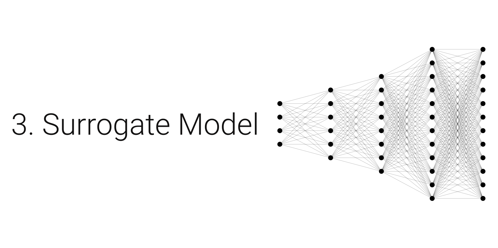
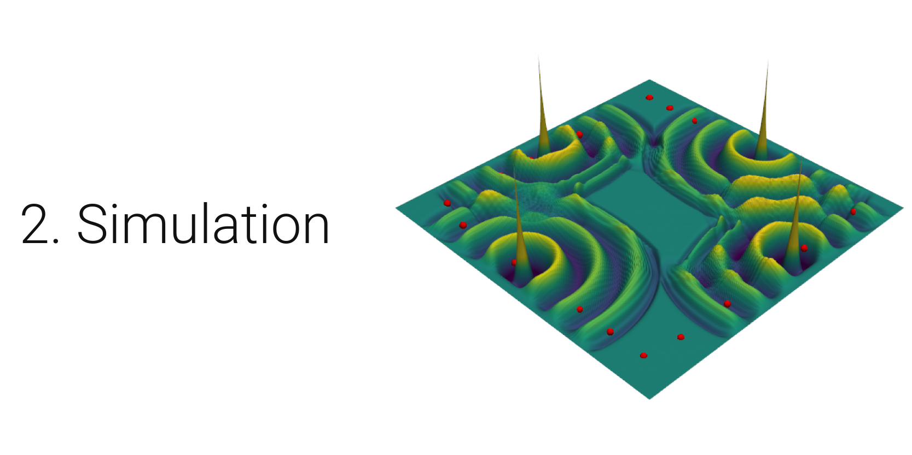
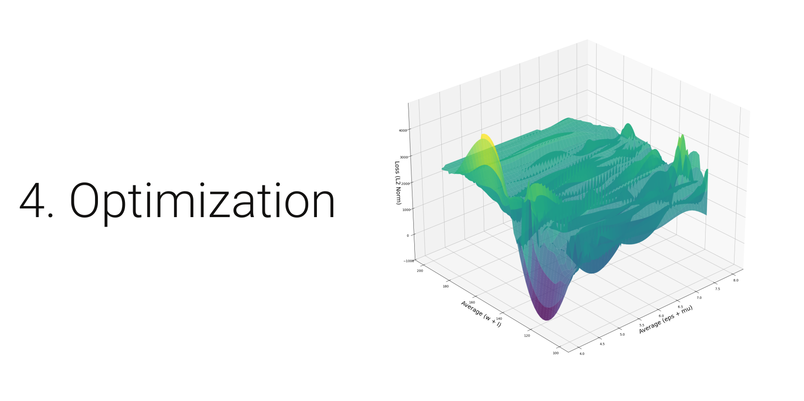
Simulation

Importance of Visualization
We are entering a new era where 3D images, visualizations, and animations will begin to extend, and in some cases, replace the current communication paradigm based on words, mathematical symbols, and 2D images. Our hope is that along the way the human imagination will be freed like never before."
– The Visualization Toolkit Documentation
Simulation
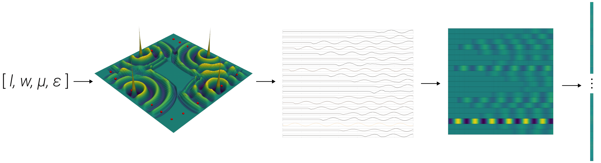
Input: vector length 4
Output: vector length 7020
Code
def forward_problem(eps_r, mu_r, length, width, plot=False): """ 2D FDTD electromagnetic wave simulation Simulates Transverse Magnetic (TM) mode field components with PML boundary conditions """ # physics parameters c = 3e8 # [m/s] speed of light mu = np.pi*4e-7 # [H/m] vacuum permeability epsilon = 1 / (mu * c**2) # [F/m] ... while t < t_final: # time loop ... # Save data for training gaussian process save_training_data(input_data, output_data) return
Surrogate Model
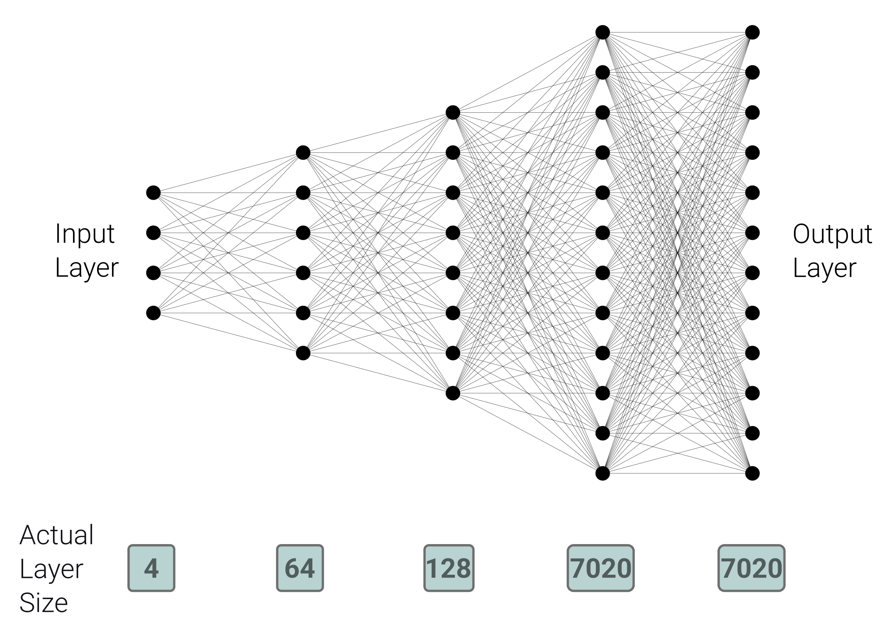
Code
import torch class PinnModel(nn.Module): def __init__(self): super(PinnModel, self).__init__() # Define layers self.fc1 = nn.Linear(4, 64) # Input layer (4 parameters to 64 neurons) self.fc2 = nn.Linear(64, 128) # Hidden layer (64 to 128 neurons) self.fc3 = nn.Linear(128, 7020) # Hidden layer (128 to 7020 neurons = 20 * 351) self.fc4 = nn.Linear(7020, 7020) # Hidden layer (7020 to 7020 neurons = 20 * 351) def forward(self, x): # Pass through layers x = F.relu(self.fc1(x)) # Shape: [1, 64] x = F.relu(self.fc2(x)) # Shape: [1, 128] x = F.relu(self.fc3(x)) # Shape: [1, 7020] x = self.fc4(x) # Shape: [1, 7020] return x
Optimization
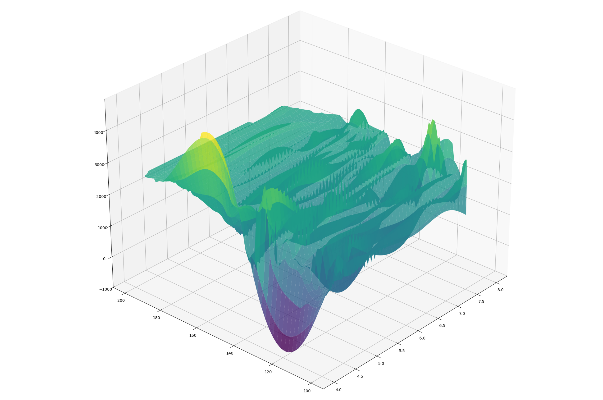
Gradient descent least-squares method to optimize the objective function: \(f(m) = \frac{1}{2} \| \text{experimental data} - \text{simulated data} \|_2^2\)
Vision for the Project
Scalable
Laptop
Desktop
Supercomputer
→
→
→
Text explaining the ailment
Low resolution image
High resolution image
Affordable
Accessible to 99% of the population
Mobile
Runs in an ambulance in the middle of Appalachia
Runs on a laptop in the middle of the Congo
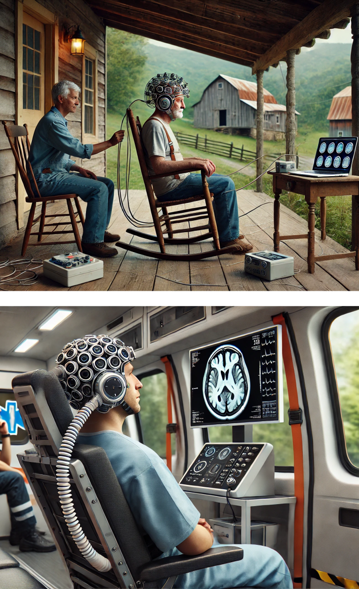
Advantages
- Cost-effective
- Mobile
- Non-ionizing radiation
- Sensitive to dielectric properties
Challenges
- Ill-posed inverse problem
- Sensitivity to noise
- Computational complexity
- Resolution
What are other people doing?
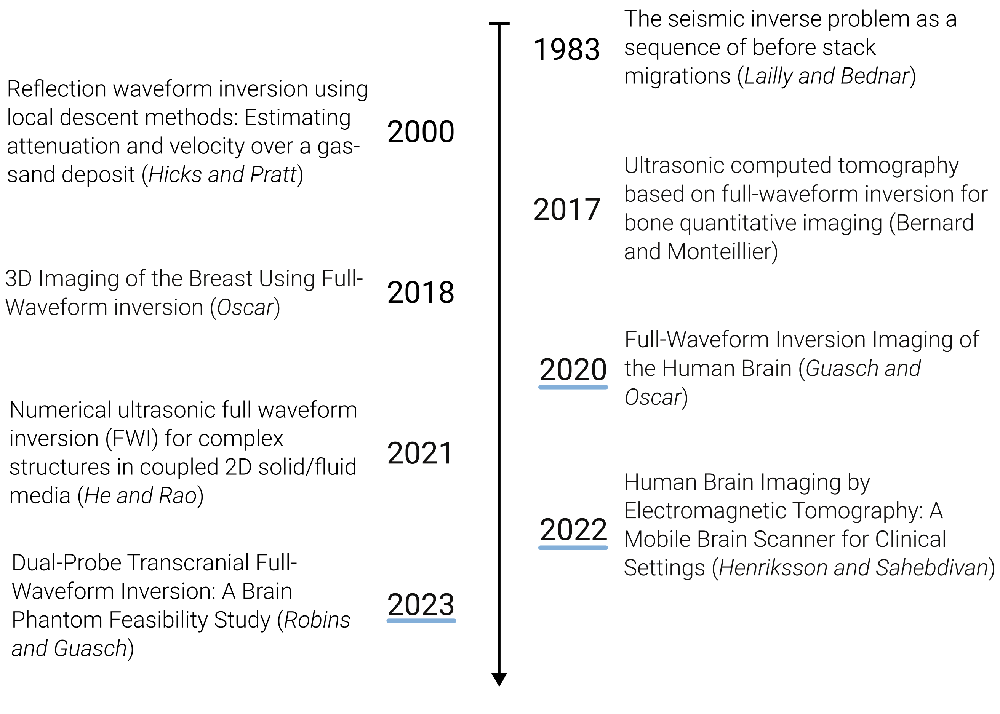
Full-Waveform Inversion Imaging of the Human Brain
Guasch, Lluis, Oscar Calderón Agudo, et al. 2020. Npj Digital Medicine
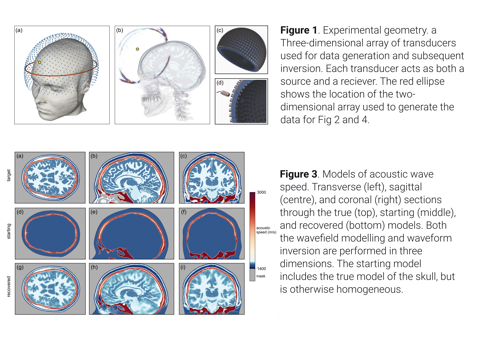
Human Brain Imaging by Electromagnetic Tomography: A Mobile Brain Scanner for Clinical Settings
Henriksson, Tommy, Sahar Sahebdivan, et al. 2022. 16th European Conference on Antennas and Propagation (EuCAP)
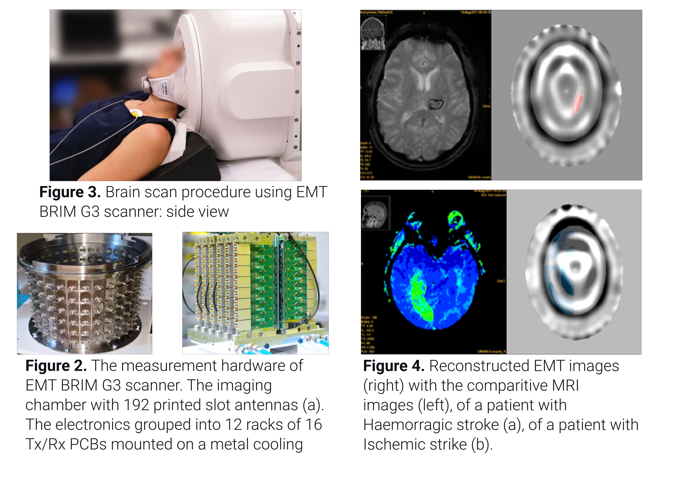
Dual-Probe Transcranial Full-Waveform Inversion: A Brain Phantom Feasibility Study
Robins, T. C., C. Cueto, L. Guasch, et al. 2023. Ultrasound in Medicine & Biology
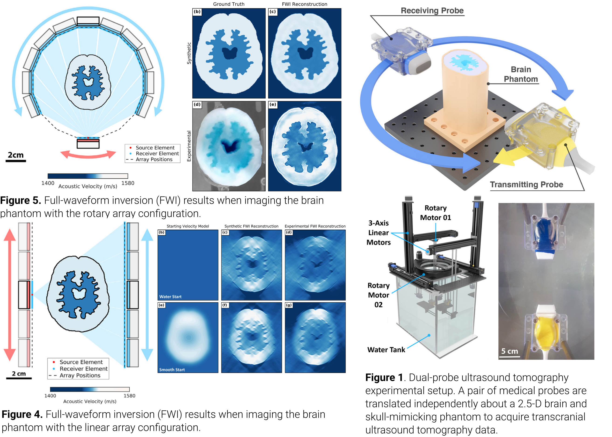
What have I done so far?
- Simulation - Finite Different Time Domain (FDTD)
- Surrogate model - Simple five layer neural network
- Optimization - Gradient descent
Simulation Method: Finite Difference Time Domain (FDTD) Method
Maxwell's equations
Maxwell's curl equations
FDTD updating equation for 2D problems
\[\small
\begin{align*}
\frac{\partial E_x}{\partial t} &= \frac{1}{\varepsilon_x} \left( \frac{\partial H_z}{\partial y} - \sigma_x^e E_x - J_{ix} \right) \\
\frac{\partial E_y}{\partial t} &= \frac{1}{\varepsilon_y} \left( -\frac{\partial H_z}{\partial x} - \sigma_y^e E_y - J_{iy} \right) \\
\frac{\partial E_z}{\partial t} &= \frac{1}{\varepsilon_z} \left( \frac{\partial H_y}{\partial x} - \frac{\partial H_x}{\partial y} - \sigma_z^e E_z - J_{iz} \right) \\
\frac{\partial H_x}{\partial t} &= \frac{1}{\mu_x} \left( -\frac{\partial E_z}{\partial y} - \sigma_x^m H_x - M_{ix} \right) \\
\frac{\partial H_y}{\partial t} &= \frac{1}{\mu_y} \left( \frac{\partial E_z}{\partial x} - \sigma_y^m H_y - M_{iy} \right) \\
\frac{\partial H_z}{\partial t} &= \frac{1}{\mu_z} \left( \frac{\partial E_x}{\partial y} - \frac{\partial E_y}{\partial x} - \sigma_z^m H_z - M_{iz} \right)
\end{align*}\]
Second order accurate central difference formula
Grid and timestepping
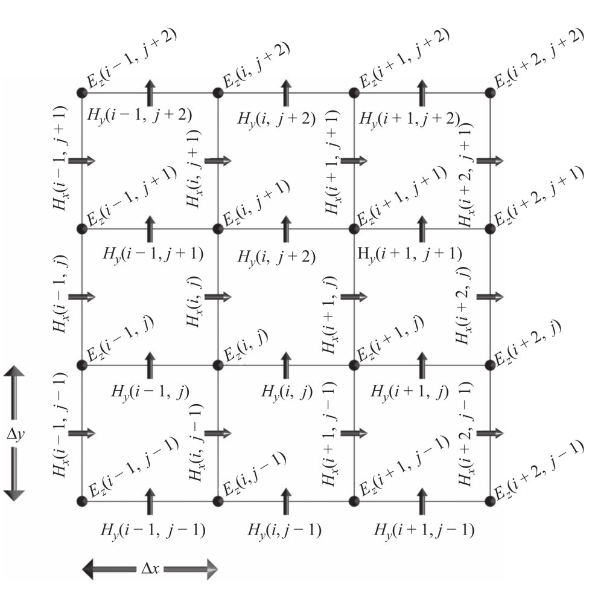
Two-dimensional TMz FDTD field components. Figure from[9]
\[\tiny
\begin{align*}
E_z^{(n+1)}(i,j) &= C_{eze}(i,j) \cdot E_z^n(i,j) \\
&\quad + C_{ezhy}(i,j) \cdot \left( H_y^{(n+1/2)}(i,j) - H_y^{(n+1/2)}(i-1,j) \right) \\
&\quad + C_{ezhx}(i,j) \cdot \left( H_x^{(n+1)}(i,j) - H_x^{(n+1/2)}(i,j-1) \right) \\
&\quad + C_{ezj}(i,j) \cdot J_{iz}^{(n+1/2)}(i,j) \\
H_x^{(n+1/2)}(i,j) &= C_{hxh}(i,j) \cdot H_x^{(n-1/2)}(i,j) \\
&\quad + C_{hxez}(i,j) \cdot \left( E_z^n(i,j+1) - E_z^n(i,j) \right) \\
&\quad + C_{hxm}(i,j) \cdot M_{ix}^n(i,j) \\
H_y^{(n+1/2)}(i,j) &= C_{hyh}(i,j) \cdot H_y^{(n-1/2)}(i,j) \\
&\quad + C_{hyex}(i,j) \cdot \left( E_x^n(i+1,j) - E_z^n(i,j) \right) \\
&\quad + C_{hym}(i,j) \cdot M_{iy}^n(i,j)
\end{align*}\]
Results
What problems did I face?
- Managing complexity
- Finding good dependencies
- Building a development environment
- Planning for the future
What makes a good dependency?
- Open source
- Well maintained
- Good documentation
- Large community
- Infrequent breaking changes
- Preferably funded
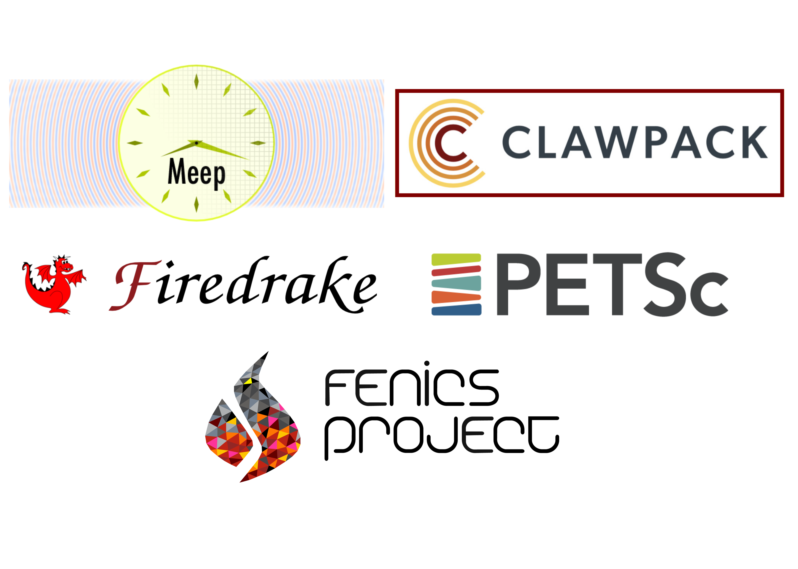
Creating a Development Environment
- Easily deployable
- Works across different architectures
- Pinned dependencies
Design Strategies
"Do the simplest thing that could possibly work"
– Ron Jeffries
"You aren't gonna need it"
– Ron Jeffries
"It is hard for less experienced developers to appreciate how rarely architecting for future requirements / applications turns out net-positive"
– Ron Jeffries
Where do we go from here?
Decisions to be made for the forward problem
Spatial discretization
Numerical flux function
Type of elements
Type of mesh
Temporal accuracy
Spatial accuracy
Boundary conditions
→
→
→
→
→
→
→
Discontinuous Galerkin
Lax-Friedrichs
Lagrange elements
Unstructured tetrahedron
2nd Order
3rd Order
Consecutive Matched Layer
See Steven Vandekerckhove's 2016 PhD thesis: Simulation of wave propagation problems for automated characterization of material parameters[10]
Simulation Method: Discontinuous Galerkin (DG) Method
- Write down the governing equations.
- Decide on basis functions that you will use to represent the solution.
- Project the solution onto your basis functions in such a way that all the error is perpendicular to your function space
- Replace the flux terms at the boundary between elements with a numerical flux function
Math - DG method with a perfectly matched layer
\[\tiny
\begin{align*}
& q_t + \sum_{i=1}^2 \frac{\partial F_i}{\partial x_i} = f \\
& q_t + \frac{\partial F_1}{\partial x} + \frac{\partial F_2}{\partial y} - f = 0 \\
& q_t + \frac{\partial F_1}{\partial x} + \frac{\partial F_2}{\partial y} + \sigma(x) q - f = 0 \\
& \int_{K_i}\left( q_t + \frac{\partial F_1}{\partial x} + \frac{\partial F_2}{\partial y} + \sigma(x) q - f \right) \cdot l \, dx = 0 \\
& \int_{K_i} \left( q_t - f \right) \cdot l \, dV - \int_{K_i} \left( \frac{\partial F_1}{\partial x} + \frac{\partial F_2}{\partial y} \right) \cdot l \, dV + \int_{K_i} \left( \sigma(x) q \right) \cdot l \, dV = 0 \\
& \int_{K_i} \left( q_t - f \right) \cdot l \, dV - \int_{K_i} \left( F_1 + F_2 \right) \cdot \nabla l \, dV + \int_{K_i} \left( \sigma(x) q \right) \cdot l \, dV = -\int_{\partial K_i} \left( n_1 F_1 + n_2 F_2 \right) \cdot l \, dS \\
& \text{Replace } n_1 F_1 + n_2 F_2 \text{ with numerical flux } F^* \text{. Use Lax-Friedrichs flux } F_i = \frac{A_i^+ q^+ + A_i^- q^-}{2} \\
& \int \left( q_t - f \right) \cdot l \, dV - \int \left( F_1 + F_2 \right) \cdot \nabla l \, dV + \int \left( \sigma(x) q \right) \cdot l \, dV + \int \left(\frac{A_1^+ q^+ + A_1^- q^-}{2} + \frac{A_2^+ q^+ + A_2^- q^-}{2}\right) \cdot l \, dV \\
& q_t = \frac{q^{n+1} - q^n}{\Delta t}, \quad F_1 = A_1 q, \quad F_2 = A_2 q \\
\end{align*}\]
Integration by parts
Decisions to be made for the Inverse Problem
Surrogate model
Optimization problem
→
→
Gaussian process (GP)
Physics-Informed Neural Network (PINNs)
Kolmogorov-Arnold Networks (KAN)
Gradient Descent
Markov Chain Monte Carlo (MCMC)
Surrogate model: Gaussian Process (GP)
- Gives a confidence interval for the predicted function.
- Determined by their mean and covariance functions.
- The covariance matrix, Σ, ultimately determines the characteristics of the function that we want to predict.
- Since the covariance matrix describes the similarity between the values of our function, it controls the possible shape that a fitted function can adopt.
- The covariance matrix is created by evaluating a covariance function k, also called a kernel, using the training data.[14]
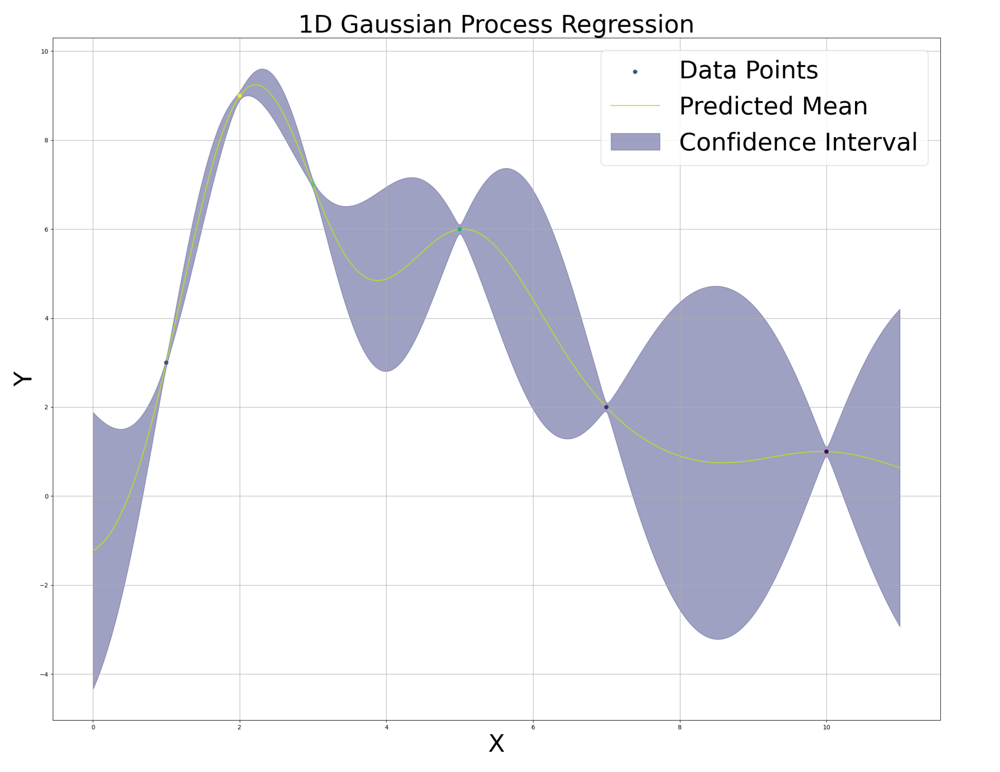
Disadvantages - Best with <20 inputs
Surrogate model: Physics Informed Neural Network (PINN)
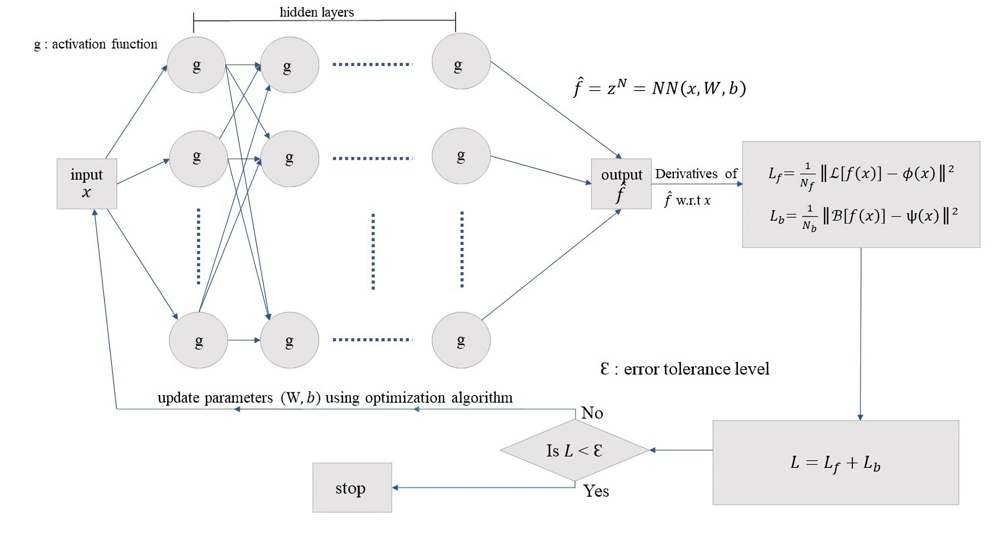
Figure 1: Schematic representation of PINN[15]
Surrogate model: Kolmogorov-Arnold Network (KAN)
| Multi-layer Perceptron (MLP) | Kolmogorov-Arnold Network (KAN) |
|---|---|
| Pre-defined activation functions (linear, sigmoid, ReLu, etc.) | Learnable activation functions on edges |
| Weights adjusted during training | Basis functions as building blocks |
| Does not use linear weights |
Advantage - Interpretability
Visualization

Optimization problem: Markov Chain Monte Carlo (MCMC)
- Sampling method for exploring complex, high-dimensional spaces.
- Identify which parameters are most relevant.
- Often used with Gaussian Processes.
- Can be used with Gradient Descent to explore parameter space.
Where to go from here
- Multi-physics: (acoustic and electromagnetic waves)
- Improving the model (viscoporoelastic, non-linear)
- Optimizing the input
- Sequential design (experiment, optimization, simulation, repeat)
- Adaptive mesh refinement